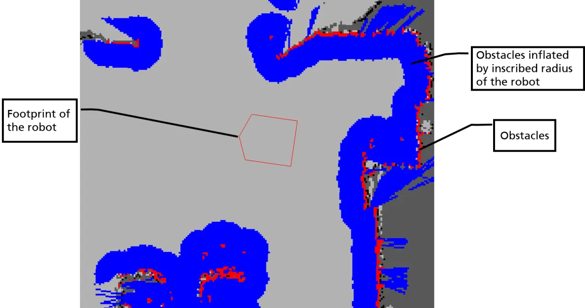

meta-package：元功能包（或综合功能包）为一系列功能包的组合。
Navigation 2 是一个元功能包，它使移动平台能够到达预定目标。
- 加载、服务和存储地图 ([nav2_map_server])
- 在地图上定位机器人 ([nav2_amcl])
- 围绕障碍物规划从 A 到 B 的路径（[nav2_planner]）
- 控制机器人跟随路径（[nav2_controller]）
- 将传感器数据转换为世界的代价地图表示 ([nav2_costmap_2d])
- 使用行为树（[nav2__behavior_trees] 和 [nav2_bt_navigator]）构建复杂的机器人行为
- 计算发生故障时的恢复行为 ([nav2_recoveries])
- 按照顺序航点（[nav2_waypoint_follower]）
- 管理服务器的生命周期 ([nav2_lifecycle_manager])
- 启用自定义算法和行为的插件 ([nav2_core])
规划概述 Planning

注意黄色标出部分。 扩展如下：
其中目标-路径-/cmd_vel-机器人。
插件 Plugins
[nav2_core]：托管插件的抽象接口（虚拟基类）
规划 Planning
规划器会帮助找到成本最低的路径。
成本包含很多方面（物体接近度、持续时间、向后运动、旋转……）
代价地图 Costmap
[nav2_costmap_2d] 代价图计算障碍物周围的成本，并标出机器人安全和不安全的地方。

障碍物膨胀 Inflatation of obstacles
图Figure 1：工作空间W到配置空间C的转换
(a) W 空间中的圆形机器人和障碍物 (b) 基于机器人足迹的变换 (c) C 空间中的点机器人和膨胀障碍物
图Figure 2：障碍物膨胀
(a) 点机器人（无充气） (b) 小型圆形机器人 (c) 大型圆形机器人
代价地图配置 Costmap Configuration
每一层的细则（"static_layer", "obstacle_layer", "voxel_layer", "inflation_layer"）：
- 静态地图层Static Map Layer：来自一个不变的数据
外部来源（静态地图）
- 障碍物层Obstacle Layer：在读取时跟踪障碍物
通过传感器数据（2D、LaserScan）
- 体素层Voxel Layer：使用跟踪障碍物
点云2（3D）
- 膨胀层Inflation Layer：膨胀障碍物
表示机器人的配置空间
turtlebot-burger，配置如下：
局部代价地图
local_costmap:
local_costmap:
ros__parameters:
update_frequency: 5.0
publish_frequency: 2.0
global_frame: odom
robot_base_frame: base_link
use_sim_time: False
rolling_window: true
width: 3
height: 3
resolution: 0.05
robot_radius: 0.1
plugins: ["obstacle_layer", "voxel_layer", "inflation_layer"]
inflation_layer:
plugin: "nav2_costmap_2d::InflationLayer"
cost_scaling_factor: 1.0
obstacle_layer:
plugin: "nav2_costmap_2d::ObstacleLayer"
enabled: True
observation_sources: scan
scan:
topic: /scan
max_obstacle_height: 2.0
clearing: True
marking: True
data_type: "LaserScan"
voxel_layer:
plugin: "nav2_costmap_2d::VoxelLayer"
enabled: True
publish_voxel_map: True
origin_z: 0.0
z_resolution: 0.05
z_voxels: 16
max_obstacle_height: 2.0
mark_threshold: 0
observation_sources: pointcloud
pointcloud:
topic: /intel_realsense_r200_depth/points
max_obstacle_height: 2.0
clearing: True
marking: True
data_type: "PointCloud2"
static_layer:
map_subscribe_transient_local: True
always_send_full_costmap: True
local_costmap_client:
ros__parameters:
use_sim_time: False
local_costmap_rclcpp_node:
ros__parameters:
use_sim_time: False
- 1.
- 2.
- 3.
- 4.
- 5.
- 6.
- 7.
- 8.
- 9.
- 10.
- 11.
- 12.
- 13.
- 14.
- 15.
- 16.
- 17.
- 18.
- 19.
- 20.
- 21.
- 22.
- 23.
- 24.
- 25.
- 26.
- 27.
- 28.
- 29.
- 30.
- 31.
- 32.
- 33.
- 34.
- 35.
- 36.
- 37.
- 38.
- 39.
- 40.
- 41.
- 42.
- 43.
- 44.
- 45.
- 46.
- 47.
- 48.
- 49.
- 50.
- 51.
- 52.
全局代价地图：
global_costmap:
global_costmap:
ros__parameters:
update_frequency: 1.0
publish_frequency: 1.0
global_frame: map
robot_base_frame: base_link
use_sim_time: False
robot_radius: 0.1
resolution: 0.05
plugins: ["static_layer", "obstacle_layer", "voxel_layer", "inflation_layer"]
obstacle_layer:
plugin: "nav2_costmap_2d::ObstacleLayer"
enabled: True
observation_sources: scan
scan:
topic: /scan
max_obstacle_height: 2.0
clearing: True
marking: True
data_type: "LaserScan"
voxel_layer:
plugin: "nav2_costmap_2d::VoxelLayer"
enabled: True
publish_voxel_map: True
origin_z: 0.0
z_resolution: 0.05
z_voxels: 16
max_obstacle_height: 2.0
mark_threshold: 0
observation_sources: pointcloud
pointcloud:
topic: /intel_realsense_r200_depth/points
max_obstacle_height: 2.0
clearing: True
marking: True
data_type: "PointCloud2"
static_layer:
plugin: "nav2_costmap_2d::StaticLayer"
map_subscribe_transient_local: True
inflation_layer:
plugin: "nav2_costmap_2d::InflationLayer"
cost_scaling_factor: 1.0
inflation_radius: 0.55
always_send_full_costmap: True
global_costmap_client:
ros__parameters:
use_sim_time: False
global_costmap_rclcpp_node:
ros__parameters:
use_sim_time: False
- 1.
- 2.
- 3.
- 4.
- 5.
- 6.
- 7.
- 8.
- 9.
- 10.
- 11.
- 12.
- 13.
- 14.
- 15.
- 16.
- 17.
- 18.
- 19.
- 20.
- 21.
- 22.
- 23.
- 24.
- 25.
- 26.
- 27.
- 28.
- 29.
- 30.
- 31.
- 32.
- 33.
- 34.
- 35.
- 36.
- 37.
- 38.
- 39.
- 40.
- 41.
- 42.
- 43.
- 44.
- 45.
- 46.
- 47.
- 48.
- 49.
- 50.
- 51.
规划服务器 Planner Server
规划服务器[nav2_planner]：尝试为到达目标点找到全局规划路径。
默认是 nav2_navfn_planner：
- 支持2种搜索算法：
- Dijkstra：找到最短路径
- A*：使用启发式来引导自身，但不保证找到最短路径
- 使用全局代价地图（仍可以通过机器人传感器更新）
在以下位置发布路径：~/plan (nav2_msgs/Path)
Dijkstra | A* |
规划服务器配置 Planner Server Configuration
- ~allow_unknown (bool, default: true)
- ~tolerance (double, default: 0.0)
参考turtlebot-burger
下一节为控制（Controller）。